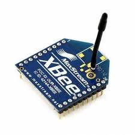

Contents
Use Arduino Zero Nodes
 Level: Easy
Level: Easy
 Duration: 20 minutes
Duration: 20 minutes
Prerequisites: Configure SSH Access, Experiment CLI client, Node CLI client
Description: This tutorial shows how to use the Experiment CLI Tool utility from the SSH frontend to interact with the Arduino Zero nodes available on IoT-LAB. You will learn how to list available Arduino Zero nodes, start an experiment, and interact with the nodes. This tutorial uses the Arduino Zero nodes available on the Saclay site.

Arduino Zero nodes consist of a board and a wireless extension shield with an XBee radio. The XBee radio is compatible with the 802.15.4 standard and can be used for IPv6 communication.

The communication between the Arduino Zero and the XBee is done via the UART connected to the Arduino RX/TX pins at 9600 bauds.
Initialize your environment
Connect to the SSH frontend and get some help :
my_computer$ ssh <login>@saclay.iot-lab.info
If you have not authenticated yet using iotlab-auth, do it now:
<login>@saclay:~$ iotlab-auth -u <login>
List available custom nodes
Available Arduino Zero nodes can be listed using the iotlab-experiment command with the archi and site option
<login>@<site>:~$ iotlab-experiment info -l --archi arduino-zero --site saclay
{
"archi": "arduino-zero:xbee",
"mobile": 0,
"mobility_type": " ",
"network_address": "arduino-zero-1.saclay.iot-lab.info",
"site": "saclay",
"state": "Alive",
"uid": " ",
"x": "1",
"y": "53.8",
"z": "4"
},
[...]
Submit an experiment on Arduino Zero nodes
Now that the available Arduino Zero nodes on a site are known, one can submit an experiment on Saclay site nodes listed above, for example arduino-zero-1 to arduino-zero-2.
For this experiment, download the provided example firmware based on RIOT.
<login>@saclay:~$ wget https://raw.githubusercontent.com/wiki/iot-lab/iot-lab/firmwares/custom/arduino-zero-default.elf -P ~/.
To reserve the Arduino Zero nodes, iotlab-experiment can be invoked in 2 ways:
- Using the nodes id list, here it’s
arduino-zero,1-2:<login>@saclay:~$ iotlab-experiment submit -d 60 -l saclay,arduino-zero,1-2,~/arduino-zero-default.elf { "id": 53913 } - Using the nodes architecture, here it’s
archi=arduino-zero:xbee:<login>@saclay:~$ iotlab-experiment submit -d 60 -l 2,archi=arduino-zero:xbee+site=saclay,~/arduino-zero-default.elf { "id": 53914 }Now wait until the experiment is ready, e.g nodes are reserved and flashed with the given firmware.
<login>@saclay:~$ iotlab-experiment wait Waiting that experiment 53914 gets in state Running "Running"
Interact with the Arduino Zero nodes
Similar to the IoT-LAB M3 nodes, use nc on port 20000 to interact with any reserved node:
<login>@saclay:~$ nc arduino-zero-1.saclay.iot-lab.info 20000
and play with the RIOT shell:
> help
help
Command Description
---------------------------------------
udp send data over UDP and listen on UDP ports
reboot Reboot the node
ps Prints information about running threads.
ping6 Ping via ICMPv6
random_init initializes the PRNG
random_get returns 32 bit of pseudo randomness
nib Configure neighbor information base
ifconfig Configure network interfaces
rpl rpl configuration tool ('rpl help' for more information)
>
You can access to the IEEE 802.15.4 interface of the board (using the XBee) via the ifconfig:
> ifconfig
ifconfig
Iface 7 HWaddr: c2:26 Channel: 26 NID: 0x23
Long HWaddr: 00:13:a2:00:41:46:c2:26
MTU:1280 HL:64 RTR
RTR_ADV IPHC
Source address length: 8
Link type: wireless
inet6 addr: fe80::213:a200:4146:c226 scope: local VAL
inet6 group: ff02::2
inet6 group: ff02::1
inet6 group: ff02::2401:ff46:c226
inet6 group: ff02::1a
Protocol or device doesn't provide statistics.
Statistics for IPv6
RX packets 36 bytes 2418
TX packets 36 (Multicast: 3) bytes 4178
TX succeeded 36 errors 0
>
Using the link local address (fe80::213:a200:4146:c226), you can start an udp server on port 8888 on one of the Arduino Zero, and from the other node, send an udp packet:
> udp server start 8888 udp server start 8888 Success: started UDP server on port 8888 >
Send the udp message from the other node:
<login>@saclay:~$ nc arduino-zero-2.saclay.iot-lab.info 20000
> udp send fe80::213:a200:4146:c226 8888 HelloWorld! Success: sent 11 byte(s) to [fe80::213:a200:4146:c226]:8888
You should see the packet received on the first node:
PKTDUMP: data received: ~~ SNIP 0 - size: 11 byte, type: NETTYPE_UNDEF (0) 00000000 48 65 6C 6C 6F 57 6F 72 6C 64 21 ~~ SNIP 1 - size: 8 byte, type: NETTYPE_UDP (4) src-port: 8888 dst-port: 8888 length: 19 cksum: 0x4d58 ~~ SNIP 2 - size: 40 byte, type: NETTYPE_IPV6 (2) traffic class: 0x00 (ECN: 0x0, DSCP: 0x00) flow label: 0x00000 length: 19 next header: 17 hop limit: 64 source address: fe80::213:a200:4146:c223 destination address: fe80::213:a200:4146:c226 ~~ SNIP 3 - size: 26 byte, type: NETTYPE_NETIF (-1) if_pid: 7 rssi: 56 lqi: 0 flags: 0x0 src_l2addr: 00:13:a2:00:41:46:c2:23 dst_l2addr: 00:13:a2:00:41:46:c2:26 ~~ PKT - 4 snips, total size: 85 byte